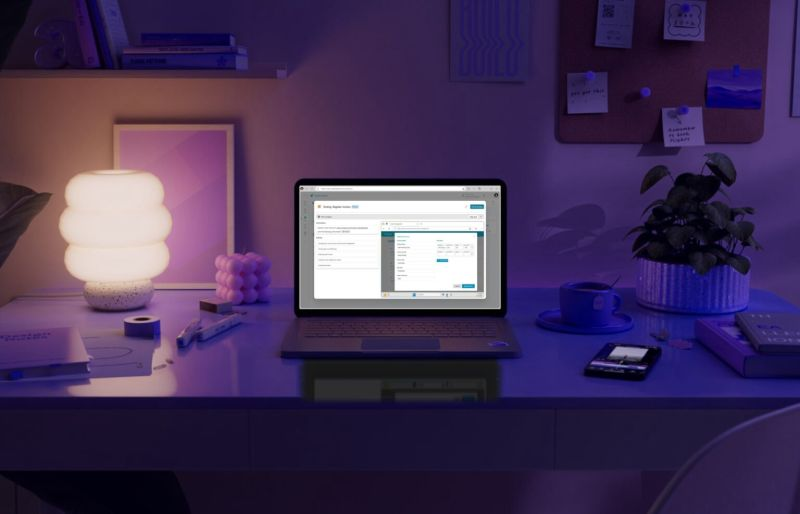
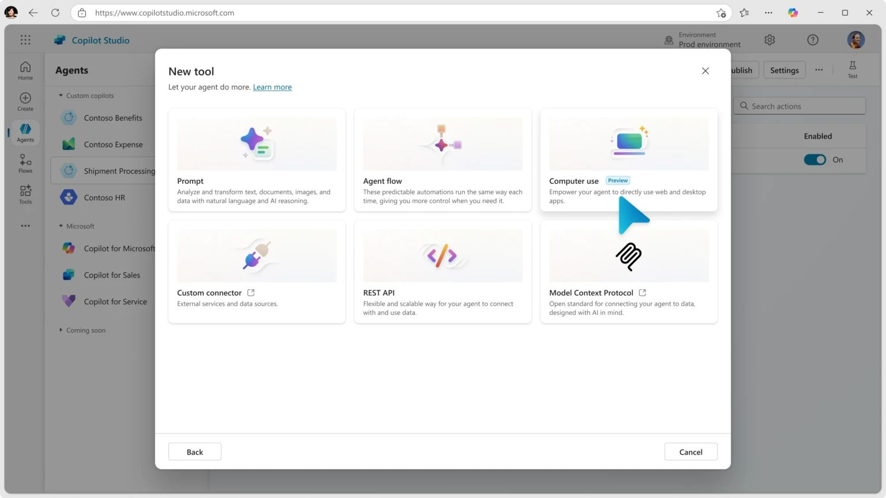
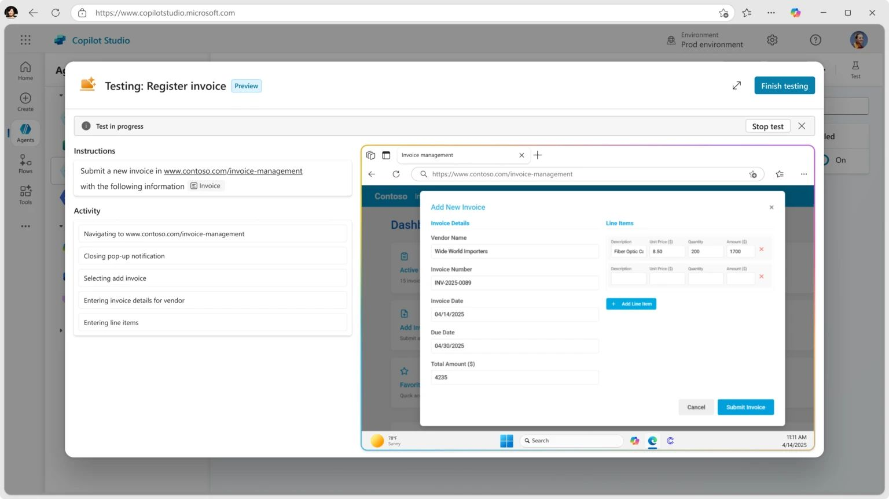

Hoy Microsoft anuncia #CUA Computer Use Agent en Copilot Studio. Agentes que permiten tratar sitios web y aplicaciones de escritorio como herramientas. Con #CUA los agentes ahora pueden interactuar con cualquier sistema que tenga una interfaz gráfica de usuario transformando así los sistemas #RPA.
Con estos nuevos tipos de agentes, los #makers pueden:
1️⃣ Automatizar la entrada de datos 2️⃣ Realizar investigaciones de mercado recopilando datos de varias fuentes online para su posterior análisis. 3️⃣ Procesar facturas, extrayendo datos automáticamente e introduciéndolos en los sistemas de contabilidad.
🖥️ Estos agentes permiten interactuar con las interfaces, hacer clic en botones, seleccionar menús, escribir en campos de pantalla y gestionar tareas aún cuando no hay API disponible. Funciona con navegadores Edge, Firefox y Chrome así como con cualquier aplicación de escritorio. Y todo sin salir de Copilot Studio que garantiza el cumplimiento normativo y la seguridad que requieren las empresas.



#CUA se ejecuta en la infraestructura cloud de Microsoft, lo que significa que las organizaciones no necesitan administrar sus propios servidores.
📌 Más información: https://lnkd.in/eBiDaAuq 📌 Para solicitar acceso: https://lnkd.in/eFPDZJ6H